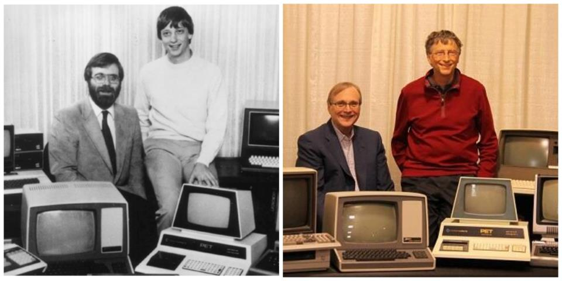

Bill Gates, the co-founder of Microsoft Corporation and one of the most prominent figures in the history of modern technology, has left an indelible mark on the world through his groundbreaking innovations, entrepreneurial spirit, and profound philanthropic efforts. With a life story that spans from humble beginnings to becoming one of the wealthiest individuals on the planet, Gates's journey is a testament to the power of determination, vision, and social responsibility.
With a life story that spans from humble beginnings to becoming one of the wealthiest individuals on the planet, Gates's journey is a testament to the power of determination, vision, and social responsibility.
Early Years and Education:
on October 28, 1955, in Seattle, Washington, William Henry Gates III was raised in a middle-class family by his parents, William H. Gates Sr. and Mary Maxwell Gates. From a young age, Gates displayed a keen interest in technology and computer programming. He attended Lakeside School, a private preparatory school, where he was first introduced to computers through the school's teletype terminal.
Gates's passion for programming blossomed during his teenage years. He spent countless hours experimenting with computers, honing his skills, and developing software programs. In 1973, Gates enrolled at Harvard University with the intention of pursuing a degree in law. However, his fascination with computers soon took precedence, leading him to devote much of his time to programming rather than attending classes.
Entrepreneurial Beginnings:
In 1975, Gates, along with his childhood friend Paul Allen, founded Microsoft—a company that would revolutionize the software industry and redefine the way people interact with computers. Their vision was to create software for the emerging personal computer market, which at the time was dominated by large mainframe computers.

Microsoft's breakthrough came in 1980 when they secured a contract with IBM to provide the operating system for their upcoming PC. Gates seized the opportunity and purchased the rights to a rudimentary operating system, which they modified and rebranded as MS-DOS. This partnership with IBM propelled Microsoft into a dominant position in the software industry.
In 1985, Microsoft released Windows, a graphical extension for MS-DOS. Despite initial skepticism, Windows eventually became the standard operating system for personal computers worldwide, solidifying Gates's reputation as a visionary leader. Under his guidance, Microsoft diversified its product portfolio, expanding into productivity software, gaming, and internet services.
Rise to Prominence:
As Microsoft continued to grow, Gates emerged as a prominent figure in the tech industry. His strategic vision, business acumen, and relentless pursuit of excellence helped propel the company to unprecedented success. By the early 1990s, Microsoft's Windows operating system had become the de facto standard for personal computing, dominating the market with over 90% market share.
Gates's leadership style was characterized by his intense focus on innovation and his willingness to take risks. He was known for his demanding demeanor and his unwavering commitment to excellence, qualities that propelled Microsoft to become one of the most valuable companies in the world.
In 1995, Gates published "The Road Ahead," a book that outlined his vision for the future of technology and its impact on society. The book became a bestseller and further solidified Gates's reputation as a thought leader in the tech industry.
Philanthropic Pursuits:
In 2000, Gates and his wife, Melinda Gates, established the Bill & Melinda Gates Foundation—a philanthropic organization dedicated to enhancing healthcare, reducing poverty, and expanding educational opportunities worldwide. With an endowment of over $50 billion, the foundation has become one of the largest and most influential charitable organizations in the world.
Through the foundation, Gates has donated billions of dollars to support initiatives aimed at improving global health, eradicating diseases such as malaria, polio, and HIV/AIDS, and expanding access to education and economic opportunities in developing countries. Gates's philanthropic efforts have had a transformative impact on millions of lives around the world, earning him widespread admiration and recognition.
In recent years, Gates has shifted his focus towards philanthropy, stepping down from his day-to-day responsibilities at Microsoft to dedicate more time to charitable work. He remains actively involved in the work of the foundation, using his wealth and influence to address some of the world's most pressing challenges.
Legacy and Impact:
Bill Gates's legacy extends far beyond his contributions to the technology industry. He is widely regarded as one of the most influential entrepreneurs and philanthropists of the modern era, with a legacy that spans innovation, business leadership, and social impact.
 Gates's life story serves as an inspiration to aspiring entrepreneurs and philanthropists alike, demonstrating the transformative power of innovation, perseverance, and generosity. His vision, leadership, and commitment to making a difference in the world have left an indelible mark on society and will continue to shape the future for generations to come.
Gates's life story serves as an inspiration to aspiring entrepreneurs and philanthropists alike, demonstrating the transformative power of innovation, perseverance, and generosity. His vision, leadership, and commitment to making a difference in the world have left an indelible mark on society and will continue to shape the future for generations to come.